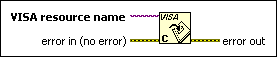
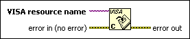

VISA Close Function
Owning Palette: VISA Advanced VIs and Functions
Requires: Base Development System
Closes a device session or event object specified by VISA resource name.

 Add to the block diagram Add to the block diagram |
 Find on the palette Find on the palette |
Owning Palette: VISA Advanced VIs and Functions
Requires: Base Development System
Closes a device session or event object specified by VISA resource name.

| Add to the block diagram |
Find on the palette |
 |
VISA resource name specifies the resource to be opened. The VISA resource name control also specifies the session and class. |
 |
error in describes error conditions that occur before this node runs. With the following exception, this input provides standard error in functionality.
This node runs normally even if an error occurred before this node runs. |
 |
error out contains error information. This output provides standard error out functionality. |
Error I/O operates uniquely in this function. The function closes the device session regardless of whether an error occurred in a preceding operation. For each VISA session that you open, you should close the session when you are finished with it. This function accepts all available classes.
You also can use the Open VISA Session Monitor VI in the labview\vi.lib\Utility\visa.llb to close all open VISA sessions. Alternatively, you could save work, exit, and re-enter LabVIEW. Exiting LabVIEW closes all open VISA sessions. You also can select the Automatically close VISA sessions option on the Environment page of the Options dialog box.
Refer to the following VIs for examples of using the VISA Close function:
 Open example Find related examples
Open example Find related examples
Open example Find related examples
Open example Find related examples
Open example Find related examples